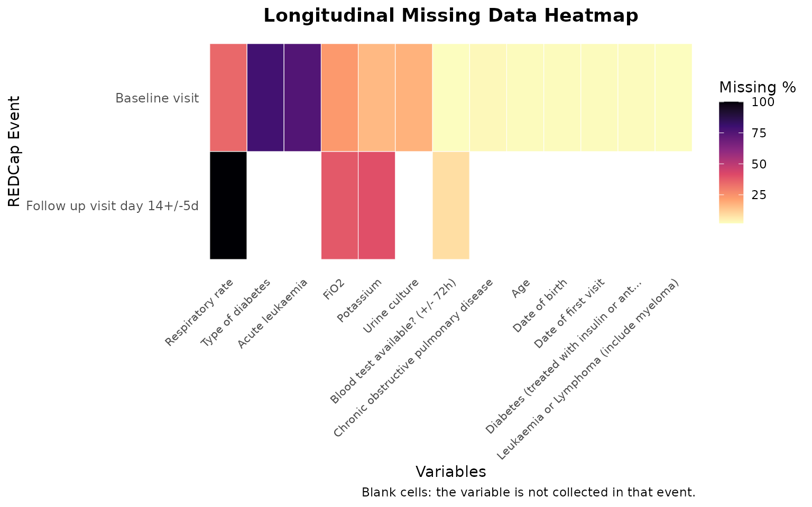
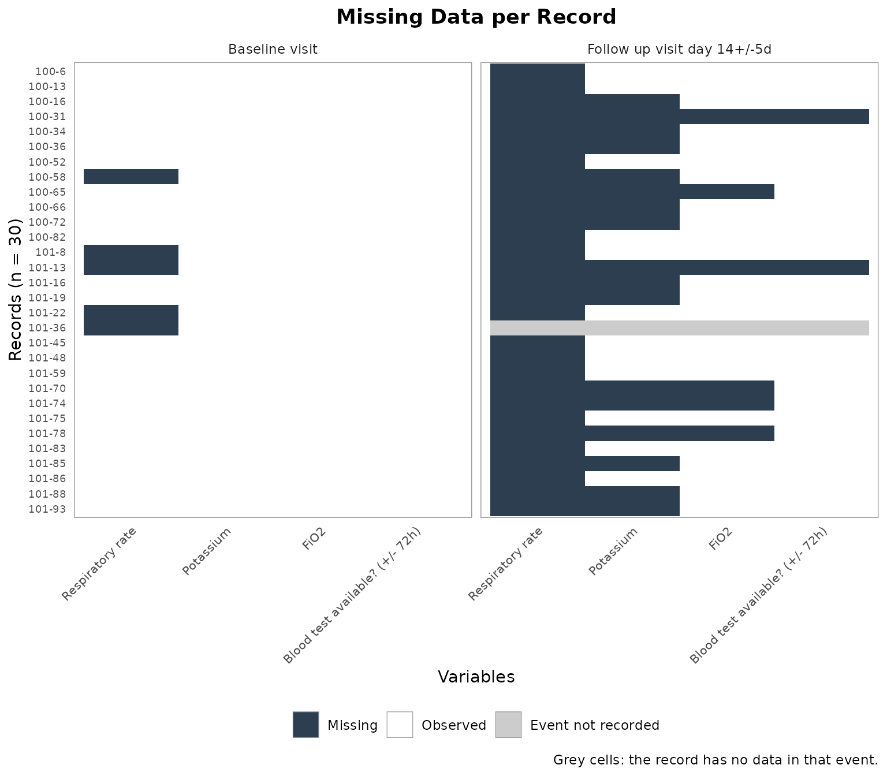

The examples use covican, the dataset included in the
package (described in vignette("REDCapDM")).
rd_missplot
The rd_missplot() function gives a visual summary of the
missing values of the dataset. It needs the ggplot2
package.
By default (by = "vars"), it shows the percentage of
missing values of each variable. In longitudinal projects, it is a
heatmap with one row per event. When the event-form mapping is
available, each variable is only evaluated in the events where its form
is collected, and the other cells are left blank:
rd_missplot(covican)
With by = "record", the plot shows one row per record
and one column per variable, with the missing values painted. In
longitudinal projects there is one panel per event, each with the
variables collected in that event. By default only the first event is
plotted (with a warning), so use the events argument to
choose others (events = "all" for every event). Records
without data in an event are shown in grey. In this example we use the
first 30 records, so that their identifiers can be read:
covican_30 <- covican
covican_30$data <- covican$data |>
dplyr::filter(record_id %in% unique(record_id)[1:30])
rd_missplot(covican_30, by = "record", events = "all", forms = c("vital_signs", "laboratory_findings"))
Other useful arguments:
eventsandforms: plot only some events or forms, in both modes.drop_complete: hide the variables without missing values (defaultTRUE).max_vars: plot only the variables with the most missing values.use_field_labelsandmax_label_length: use the labels of the dictionary for the variables, shortened to a maximum number of characters (default 40).
Events with the same name (e.g. the same event in two arms) get their
unique name in parentheses, so that they aren’t merged, and so do the
variables that share a label (with their variable name). The data can be
grouped (e.g. with dplyr::group_by()): the plot is the
same.